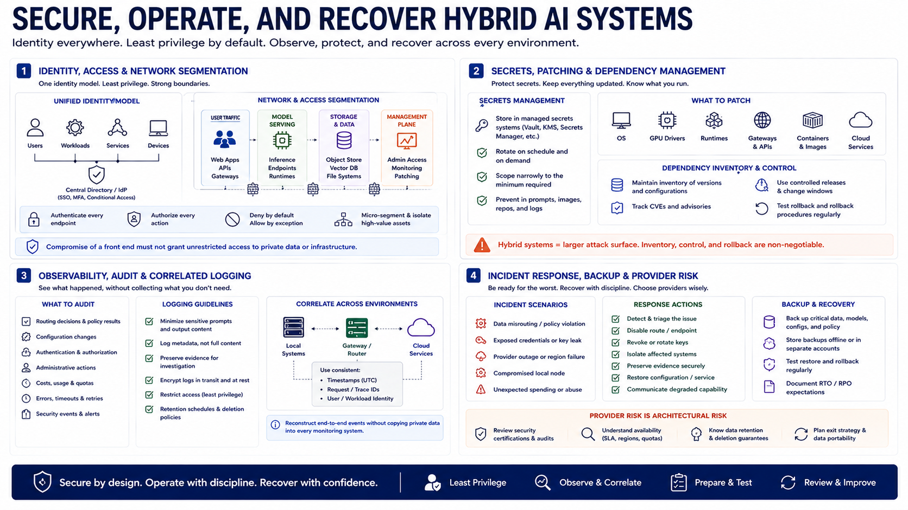

Security and Operations
Connecting to LMS... Progress: in progress

Narration
Use a consistent identity model across local services, cloud accounts, gateways, storage, and applications. Grant least privilege and require authentication at every exposed endpoint. Segment management, model-serving, storage, and user traffic so compromise of a front end does not provide unrestricted access to private data or infrastructure.
Store provider keys, model tokens, and service credentials in managed secrets systems. Rotate them, restrict their scope, and prevent them from entering prompts, images, repositories, or logs. Patch local operating systems, GPU drivers, runtimes, gateways, containers, and cloud components through controlled releases. Hybrid systems have a larger dependency surface, so version inventory and rollback matter.
Audit routing decisions, configuration changes, authentication, administrative actions, costs, errors, and security events. Minimize sensitive prompt and output content in logs while preserving enough evidence to investigate incidents. Correlate local and cloud timestamps and request identifiers so an end-to-end event can be reconstructed without copying private data into every monitoring system.
Prepare incident procedures for data misrouting, exposed credentials, provider outage, compromised local nodes, and unexpected spending. Define how to disable a route, revoke keys, isolate systems, preserve evidence, restore configuration, and communicate degraded capability. Back up irreplaceable data and policy, and test rollback. Review vendor security, availability, retention, and exit options because provider risk is part of the architecture, not an external footnote.